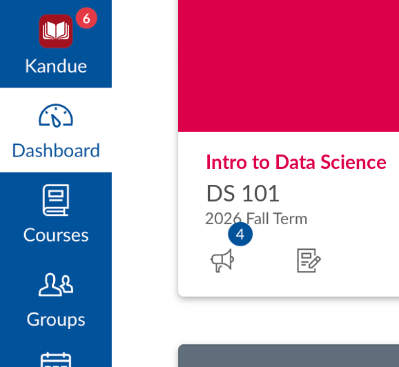

Kandue for Students
Canvas scatters your deadlines. Kandue gathers them.
Assignments sit in different courses and modules, across however many tabs you have open. Kandue reads them through Canvas's own API on your logged-in session (no API key, no password) and puts what's due in one place you can open on any page.
One deadline dashboard
Overdue, due today, and coming up across every course, sorted by what needs you first.
Ranked priorities
Your week's work ordered by what matters first, each with a reason and an hour estimate. Computed in the panel with no waiting, and the estimates adjust as you report how long things really take.
Practice quizzes
Turn a course, an assignment, or the page you're reading into a quiz that makes you commit to an answer before revealing the right one. Written by Chrome's built-in AI on your own computer, from your material rather than a question bank.
Long posts, shorter or in your language
Instructors write long. Get the key points of an announcement or an assignment brief, or read either one translated into your own language. Both run on Chrome's built-in AI, on your machine.
In Canvas's own nav
Adds itself to Canvas's left nav with a badge counting what needs attention, so there's no extra app to open.
No Kandue server
Your school's Canvas is the only server Kandue contacts. There is no backend of ours and no account to create: assignments are read straight into your browser and stay there, ranking happens in the extension, and quizzes are written by Chrome's own AI model on your computer.
See it
A panel that sits beside the page you're on, or over it if you'd rather. Read your deadlines, see what to start, and quiz yourself without leaving Canvas. Fictional courses, invented instructors: nothing in these captures comes from a real Canvas course.

Everything due, in one place
Overdue, due today and coming up, counted across every course, with this week's announcements above the list, each one carrying the colour of the course it is about.

Know what to start
Your week ranked by what actually matters first, each task with an hour estimate and one line on why it's there. Tell it how long something really took and the estimates adjust to you.

Quiz yourself on it
Commit to an answer first, then see the explanation. Works on a course, an assignment, or the page you're reading.

Built from your course
Every question traces back to your own assignment, syllabus, or page, and the explanation says which.

In the Canvas nav
One click from the Canvas nav, and a badge on the toolbar button counting what's due.
Install
1 Add to Chrome
- Open the Kandue for Students listing on the Chrome Web Store.
- Click Add to Chrome and confirm.
- Open Canvas. Kandue appears in the left nav, and the toolbar button opens the panel on any tab.
2 Connect Canvas
- On any Canvas page, open Kandue and let Settings auto-detect your Canvas instance.
- That's the whole setup. Deadlines and priorities work immediately.
Requirements
- Google Chrome or a Chromium-based browser
- An active Canvas LMS account (your school's Canvas)
- For practice quizzes only: a desktop Chrome that can run its built-in AI model (Chrome 138+ on Windows, macOS or Linux, with enough free disk space and memory). Kandue tells you in Settings whether yours can. Deadlines and priorities work on any Chrome.
Common questions
Does it work with my school's Canvas?
If your Canvas lives on a .edu address or on instructure.com, yes, Kandue detects it automatically. If your school uses its own domain, you can enter it in Settings and grant access to that one site. Kandue works with the login you already have, so there's no separate account and no API key to request.
Do I have to give it my Canvas password?
No, and there is no way to. Kandue reads Canvas through your browser's existing logged-in session, the same way the Canvas site itself does. It never sees your password, and there's no API key to generate.
Where does my coursework go?
Nowhere. It's read from your school's Canvas into your browser and stays there. There is no Kandue server and no account to create, because the extension is the whole product. The AI features run on a model inside Chrome, on your own computer, so even those send nothing. Full detail in the privacy policy.
Is the practice quiz cheating?
No, and it can't become that. Questions come only from learning material: a syllabus, an assignment description, or the page you're reading. The code never calls the Canvas endpoint that holds real quiz questions, so there is nothing to point it at. It writes practice questions on the subject for you to test yourself against.
Canvas has its own AI study tools now. How is this different?
Instructure sells AI-generated flashcards and practice quizzes, but only in its top Canvas tier, so having them is a purchase your school either made or didn't, and not something you can turn on. Kandue's practice quizzes work whatever tier your school is on, they are written on your own computer rather than on a vendor's servers, and they cost nothing.
Can my school or instructor tell I'm using it?
Kandue makes the same kind of requests to Canvas that your browser already makes when you use the site, so there is no Kandue-specific reporting. It sends nothing to us, because there's nowhere to send it, and it never writes to Canvas either.
Why don't I see the quiz or summarize buttons?
Those run on Chrome's built-in AI model, which needs a desktop Chrome with room to store the model (roughly 22GB free space, and either a 4GB+ graphics card or 16GB of RAM). Kandue checks and tells you in Settings, and hides the buttons instead of showing ones that fail. Your deadlines and priorities work on any Chrome regardless.
Does it work on my phone?
Not yet. Chrome extensions don't run on Chrome for Android or iOS, and Kandue is a desktop browser extension.
Is it free? What's the catch?
Free, with no paid tier and no ads. There's no server to run and no inference to pay for, which is exactly why it can stay that way.
Canvas counts the ungraded. It doesn't say which ones are yours.
A course-wide "22 need grading" tells a TA nothing about which of them are theirs to grade, or about the student who has been waiting eleven days. Kandue for Graders reads the course over your own Canvas session and answers both: one queue of every assignment with students of yours still to grade, longest wait first, and behind each assignment the worklist for your block — the students you are the one grading.
Longest wait first
How many you have to grade, in a ring split at seven days since the due date. When other graders hold work too, a You / Everyone switch shows the course's count and each grader's backlog by wait. Below it, one row per assignment, longest wait first, with a bar.
Your block, into SpeedGrader
Behind each assignment, every student in your block: to grade, graded with the score, resubmitted since grading, late, excused, or nothing handed in. Each row opens that student in SpeedGrader.
Who grades whom, read back
The split comes from the grades already entered, or Canvas groups named for the TAs, or you set it by hand, or the Google Sheet your team keeps — that one only after you paste its link and allow the site, and it is read over your own Google session. Whichever it is, it's checked against every grade on the assignment, and Settings shows each grader's block so you can read it against what the other graders think.
Beside SpeedGrader, not over it
Opens docked in Chrome's side panel, so the queue sits next to SpeedGrader while you grade. Settings can move it over the page or into its own window. On Canvas there's a Grading item in the left nav that opens it.
A badge for your block
The toolbar badge counts the submissions in your block still waiting on a grade, brought up to date every half hour.
Read-only, and no server
Every request is a read: it enters no grade, posts no comment and sends no message, so grading stays in SpeedGrader where the posting policy is visible. The course, its students and their submissions are read into the panel, and the last reading stays on your own device so the queue is there when you open it. There is no Kandue account and no backend of ours to send any of it to, and nothing is measured.
See it
Fictional course, invented students: nothing in these captures comes from a real Canvas course.

Who is waiting on you
Every assignment with students of yours still to grade, the longest wait at the top. Each row says how long the first of your students has waited and how many of them are still to grade, with a bar for your block.

The worklist for your block
To grade, graded with the score, resubmitted, late, missing or excused, each student one click from SpeedGrader.

Who grades whom, read back
The split every TA is actually using, checked against every grade already entered, with the disagreements named.
Install
1 Add to Chrome
- Open the Kandue for Graders listing on the Chrome Web Store.
- Click Add to Chrome and confirm.
- Open a Canvas course you TA or teach. The toolbar button opens the panel, and Canvas's left nav gains a Grading item.
2 Pick the course
- Open Settings, let it detect your Canvas address, and choose the course.
- Leave the split on Read from the grades on Canvas unless your team keeps a sheet. Settings shows you the block it read, so you can check it before trusting the queue.
Requirements
- Desktop Google Chrome, or a Chromium-based browser. Chrome extensions don't run on Chrome for Android or iOS.
- An active TA or teacher enrollment in the course. Kandue lists only the courses Canvas has you grading, so the ones you are just taking never show up in it.
- Nothing from the other TAs. It works out who grades whom from what your course already has, so no one else has to install it or change how they work.
Common questions
Can it enter a grade by mistake?
No. Every request it makes to Canvas is a read. There is no code path that enters a grade, posts a comment or sends a message, so the worst it can do is show you a stale queue. Grading happens in SpeedGrader, where your course's posting policy still applies.
Do the other TAs have to install it too?
No. It works out who grades whom from what is already on Canvas: the grades entered so far, Canvas groups named for the TAs, or a sheet your team keeps if you point it at one. Nobody else has to change anything.
What if it gets my block wrong?
It checks whatever split it read against every grade already entered on the assignment and tells you how many rows agree, so a wrong block shows up as a disagreement rather than a quietly short queue. A student in your block that another grader already graded is flagged in the worklist. You can also set the split by hand in Settings.
I'm the instructor, not a TA. Does it work?
Yes. It reads your teacher enrollments the same way it reads TA ones. With one grader on the course, your block is the whole class.
Where does the course data go?
Into the panel and nowhere else. Students, submissions and grades are read from your school's Canvas over your own session and held while the panel is open, plus the last reading kept on your device so the queue is on screen when you open it. There's no account and no backend. Full detail in the privacy policy for graders.
Questions or feedback?
Found a bug, or want something built? It becomes a public issue you can follow. Takes a free GitHub account.